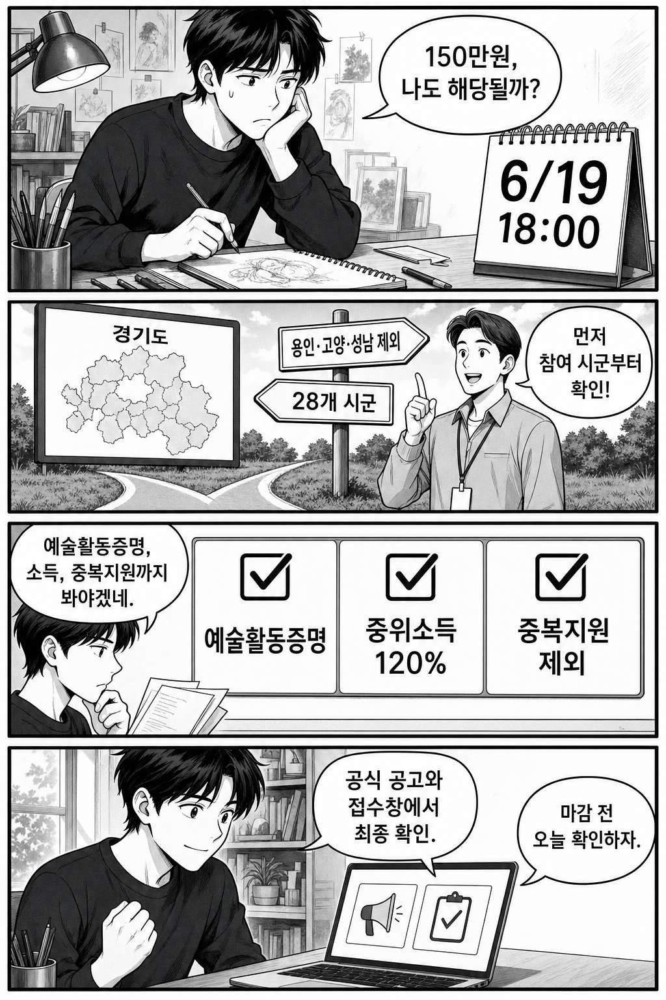

결론부터 말하면, 2026년 경기도 예술인 기회소득은 “경기도에 사는 예술인”이라고 모두 자동 대상이 아닙니다. 6월 19일 18시 전까지 참여 시군, 예술활동증명, 소득 기준, 중복지원 제외를 먼저 확인해야 합니다.
지원금은 공고 기준 연 150만원 이내 현금입니다. 다만 선정 보장 글이 아닙니다. 이 글은 경기도 공식 공고를 보고 독자가 직접 확인할 순서만 정리합니다.

공고상 접수기간은 2026년 5월 11일 10시부터 6월 19일 18시까지입니다. 기간 외 접수는 어렵다고 보는 편이 안전합니다.
지원금은 1인당 연 150만원 이내이며, 공고는 1차 7~8월, 2차 10월 예정처럼 분할 지급 일정을 안내합니다. 실제 지급은 심사와 예산, 시군별 운영에 따라 달라질 수 있으니 ‘무조건 받는다’고 이해하면 안 됩니다.
공고에는 기초생활수급자 등 사회보장급여 대상자의 경우 자격이나 급여 변동 가능성을 확인하라는 취지의 주의가 들어갑니다. 이 부분은 블로그 글만 보고 판단하지 말고, 주소지 접수처나 공식 안내에서 본인 상황을 다시 확인해야 합니다.
정리하면, 이 글의 핵심은 6월 19일 전에 “나도 되나?”를 네 갈래로 빠르게 걸러보는 것입니다. 금액이 커서 눈에 들어오지만, 실제로는 참여 시군과 제외 조건을 먼저 보는 사람이 시간을 덜 낭비합니다.